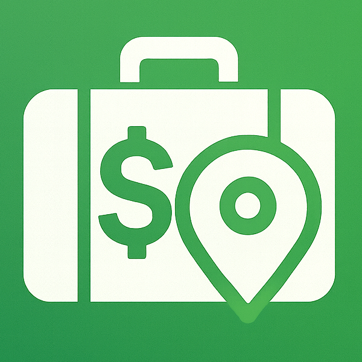

The map-centric personal finance tracker designed specifically for digital nomads and travelers.
Manage your finances across borders with geographic context and complete privacy.
Visualize your spending history across the globe. Every transaction is tied to a place, creating a geographic journey of your spending habits.
Move beyond rigid categories. Our flexible tagging system captures the nuance of travel spending, from street food to cross-border transit.
Seamlessly track expenses in local currencies. Automated exchange rate conversions keep your base currency view accurate and up-to-date.
No signal? No problem. Money Nomad is fully functional without an internet connection using local-first storage. Your data never leaves your device.
We don't use tracking pixels, analytics frameworks, or cloud-syncing. Money Nomad is a tool for you, not for advertisers.